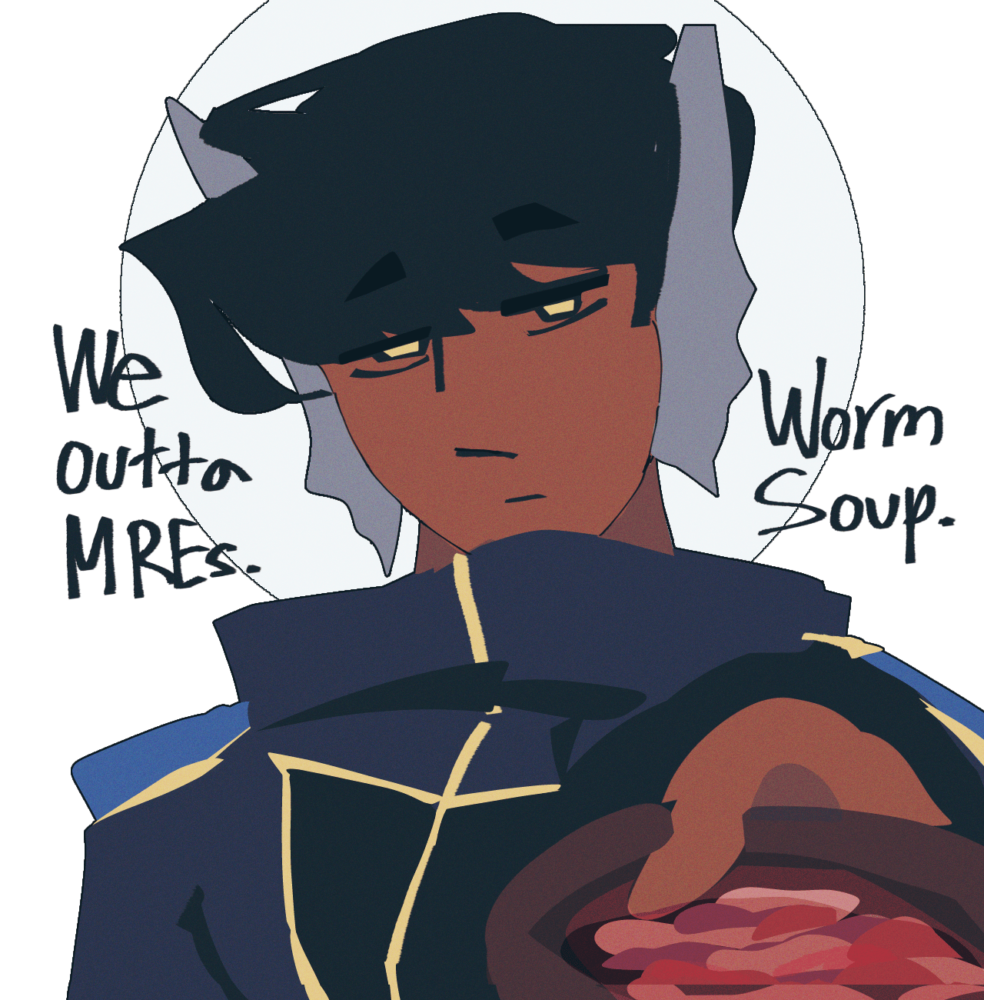
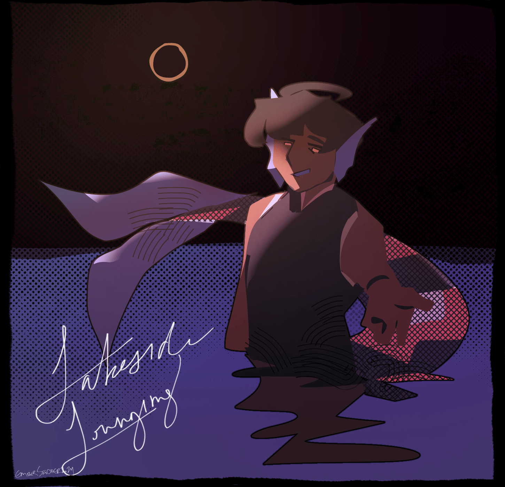

eves
creation date: july-oct 24
characters featured: enzo
this was an older drawing i started in early july and finished in october. i didn't intend for it to be a fully-rendered illust, rather it began as an un-serious doodle. when it started getting more and more detailed, the foundations weren't there, and so the facial features ended up looking very off in the end. it's alright, but it doesn't really look like enzo to me.
this above one, however, is the best and most accurate enzo i've ever drawn and it was a shitpost i drew in like 10 minutes. worm soup...
sigh.